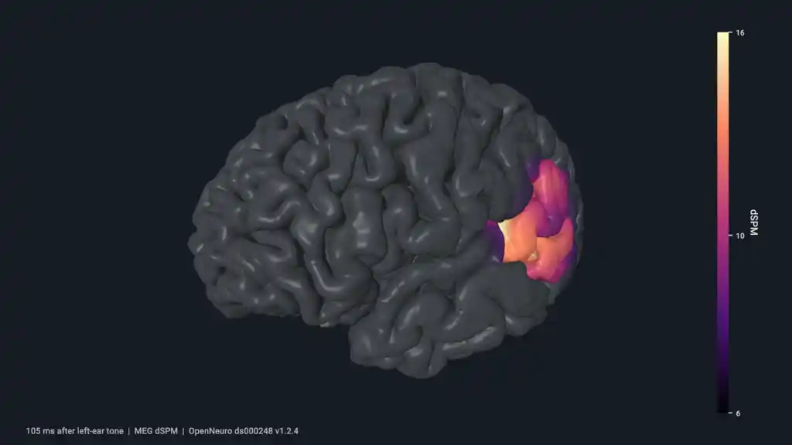

Human Auditory Cortical Activity¶
This example animates a human auditory dSPM estimate on cortex.
Preview¶

Run And Adapt¶
Commands below assume a Datoviz source checkout and start at the repository root. Use your configured build environment; Python routes additionally require local bindings.
| Route | Availability | Command or action |
|---|---|---|
| C | Canonical native source | just example-c showcases/cortical_activity (build and run), or rerun ./build/examples/c/showcases/cortical_activity |
| Python | Available | python3 -m examples.python.gallery.showcases.cortical_activity |
| Browser | Live WebGPU route | Open live example |
Prepared data required
This example intentionally fails when its prepared input is absent; it does not
substitute synthetic data.
Expected input: .cache/datoviz/examples/cortical_activity/prepared.
Prepare it from the repository root with uv run --isolated --with mne==1.12.1 --with mne-bids==0.19.0 --with nibabel==5.4.2 --with numpy==2.3.4 --with scipy==1.18.0 --with requests python tools/data/prepare_cortical_activity.py.
Use this example as capability or integration evidence, not as a minimal copy-paste template. Start from the nearest supported, copy-safe example and add this feature after verifying the linked API reference.
What To Look For¶
Measured MEG trials from an audiovisual experiment were averaged and mapped onto an oct6 source grid with a noise-normalized minimum-norm inverse, then interpolated through hemisphere-local spherical triangles onto the participant's complete full-resolution FreeSurfer cortex. Activity emerges around auditory cortex near 100 ms after the left-ear tone. The live GUI controls playback, whole/split layouts, scientific limits, material, and arcball state. The tuned initial frame is paused at 106 ms, near the strongest measured response. The gallery preview starts at that peak and preserves the live activity speed while the cortex rotates.
DSPM is a model-derived, dimensionless source estimate. It is not a direct measurement of neuronal firing or absolute current amplitude.
Prepare: uv run --isolated --with mne==1.12.1 --with mne-bids==0.19.0 --with nibabel==5.4.2 --with numpy==2.3.4 --with scipy==1.18.0 --with requests python tools/data/prepare_cortical_activity.py
Control: pass --live explicitly for the tuner; D prints C defaults; space plays/pauses; left/right arrows seek
Source¶
#!/usr/bin/env python3
"""Measured auditory dSPM activity animated on the prepared cortical surface."""
from __future__ import annotations
import ctypes
import struct
from dataclasses import dataclass
from pathlib import Path
import numpy as np
import datoviz as dvz
from examples.python.gallery import common as ex
PATHS = (Path("data/examples/cortical_activity/prepared/cortical_activity.bin"), Path(".cache/datoviz/examples/cortical_activity/prepared/cortical_activity.bin"))
HEADER_SIZE = 112
ACTIVITY_MIN, ACTIVITY_MID, ACTIVITY_MAX = 5.668, 10.387, 15.783
ANATOMY = np.array([65, 69, 74], dtype=np.float32)
MAGMA = np.array([[0, 0, 4], [81, 18, 124], [183, 55, 121], [252, 137, 97], [252, 253, 191]], dtype=np.float32)
INITIAL_ANGLES = (ctypes.c_float * 3)(+0.065367, -1.124700, +0.325712)
@dataclass
class CorticalData:
times: np.ndarray
positions: np.ndarray
indices: np.ndarray
interpolation_indices: np.ndarray
interpolation_weights: np.ndarray
values: np.ndarray
def _load() -> CorticalData:
path = next((candidate for candidate in PATHS if candidate.exists()), None)
if path is None:
raise FileNotFoundError("missing cortical activity bundle; run `python tools/data/prepare_cortical_activity.py`")
payload = path.read_bytes()
if payload[:7] != b"DVZCTA4":
raise ValueError(f"invalid cortical activity bundle: {path}")
u32 = lambda offset: struct.unpack_from("<I", payload, offset)[0]
version, header_size, hemisphere_count = u32(8), u32(12), u32(16)
time_count, source_count, _source_index_count = u32(20), u32(24), u32(28)
render_count, render_index_count = u32(32), u32(36)
if version != 4 or header_size != HEADER_SIZE or hemisphere_count != 2:
raise ValueError(f"unsupported cortical activity bundle: {path}")
offset = HEADER_SIZE
def array(dtype, count, shape):
nonlocal offset
result = np.frombuffer(payload, dtype, count, offset).reshape(shape).copy()
offset += result.nbytes
return result
times = array("<f4", time_count, (time_count,))
pial = array("<f4", 3 * render_count, (render_count, 3))
indices = array("<u4", render_index_count, (render_index_count,))
interpolation_indices = array("<u4", 3 * render_count, (render_count, 3))
interpolation_weights = array("<f4", 3 * render_count, (render_count, 3))
values = array("<f4", time_count * source_count, (time_count, source_count))
if offset != len(payload):
raise ValueError(f"unexpected cortical activity bundle size: {path}")
positions = np.column_stack((-pial[:, 0], pial[:, 2], pial[:, 1])).astype(np.float32)
return CorticalData(times, positions, indices, interpolation_indices, interpolation_weights, values)
def _normals(positions: np.ndarray, indices: np.ndarray) -> np.ndarray:
faces = indices.reshape(-1, 3)
triangles = positions[faces]
face_normals = np.cross(triangles[:, 1] - triangles[:, 0], triangles[:, 2] - triangles[:, 0])
normals = np.zeros_like(positions)
np.add.at(normals, faces[:, 0], face_normals)
np.add.at(normals, faces[:, 1], face_normals)
np.add.at(normals, faces[:, 2], face_normals)
normals /= np.maximum(np.linalg.norm(normals, axis=1, keepdims=True), 1e-12)
return normals
def _magma(values: np.ndarray) -> np.ndarray:
coordinate = np.clip(values, 0.0, 1.0) * (len(MAGMA) - 1)
lower = coordinate.astype(np.int32)
upper = np.minimum(lower + 1, len(MAGMA) - 1)
local = (coordinate - lower)[:, None]
return (1.0 - local) * MAGMA[lower] + local * MAGMA[upper]
def _colors(data: CorticalData, time_ms: float) -> np.ndarray:
upper = int(np.clip(np.searchsorted(data.times, time_ms, side="left"), 1, len(data.times) - 1))
lower = upper - 1
alpha = float((time_ms - data.times[lower]) / (data.times[upper] - data.times[lower]))
source = (1.0 - alpha) * data.values[lower] + alpha * data.values[upper]
render = np.sum(data.interpolation_weights * source[data.interpolation_indices], axis=1)
normalized = np.clip((render - ACTIVITY_MIN) / (ACTIVITY_MAX - ACTIVITY_MIN), 0.0, 1.0)
visibility = np.clip((render - ACTIVITY_MIN) / (ACTIVITY_MID - ACTIVITY_MIN), 0.0, 1.0)[:, None]
rgb = (1.0 - visibility) * ANATOMY + visibility * _magma(normalized)
return np.column_stack((np.clip(rgb + 0.5, 0, 255).astype(np.uint8), np.full(len(rgb), 255, np.uint8)))
def _build_scene():
data = _load()
normals = _normals(data.positions, data.indices)
peak_time = float(data.times[np.unravel_index(np.argmax(data.values), data.values.shape)[0]])
scene, figure, panel = ex.scene_panel()
camera = dvz.dvz_camera_desc()
camera.view.eye[:] = (-0.125, +1.0, +2.0)
camera.view.target[:] = (0.0, 0.0, 0.0)
camera.view.up[:] = (+0.210683, +0.897238, -0.388042)
dvz.dvz_panel_set_camera_desc(panel, ctypes.byref(camera))
mesh = dvz.dvz_mesh(scene, 0)
dvz.dvz_visual_set_data_many(mesh, {"position": data.positions, "normal": normals, "color": _colors(data, peak_time)})
dvz.dvz_visual_set_index_data(mesh, data.indices)
material = dvz.dvz_phong_material_desc()
material.light_direction[:] = (-0.35, +0.55, +0.75)
material.phong.ambient = 0.225
material.phong.diffuse = 0.864
material.phong.specular = 0.129
material.phong.shininess = 56.687
dvz.dvz_visual_set_material(mesh, ctypes.byref(material))
ex.add_visual(panel, mesh)
return scene, figure, panel, mesh, data, peak_time
def main() -> None:
scene, figure, panel, mesh, data, peak_time = _build_scene()
print(f"cortical_activity: {len(data.positions)} render vertices, {len(data.times)} time samples")
first, last = float(data.times[0]), float(data.times[-1])
rate = (last - first) / 3.6
def configure(view) -> None:
arcball = dvz.dvz_view_arcball(view, panel, None)
if not arcball or dvz.dvz_arcball_set(arcball, INITIAL_ANGLES) != 0:
raise RuntimeError("arcball setup failed")
dvz.dvz_arcball_zoom(arcball, 0.904838)
pan = (ctypes.c_float * 2)(+0.103135, +0.038889)
dvz.dvz_arcball_pan(arcball, pan)
def on_frame(_view, frame_index: int, elapsed: float) -> None:
if frame_index % 2:
return
time_ms = first + ((peak_time - first + rate * elapsed) % (last - first))
if dvz.dvz_visual_set_data(mesh, "color", _colors(data, time_ms)) != 0:
raise RuntimeError("cortical activity update failed")
ex.run_with_frame_callback(scene, figure, "Human Auditory Cortical Activity", on_frame, configure)
if __name__ == "__main__":
main()
/*
* Copyright (c) 2021 Cyrille Rossant and contributors. All rights reserved.
* Licensed under the MIT license. See LICENSE file in the project root for details.
* SPDX-License-Identifier: MIT
*/
/* cortical_activity - This example animates a human auditory dSPM estimate on cortex.
*
* What to look for: measured MEG trials from an audiovisual experiment were averaged and mapped
* onto an oct6 source grid with a noise-normalized minimum-norm inverse, then interpolated through
* hemisphere-local spherical triangles onto the participant's complete full-resolution FreeSurfer
* cortex. Activity emerges around auditory cortex near 100 ms after the left-ear tone. The live
* GUI controls playback, whole/split layouts, scientific limits, material, and arcball state. The
* tuned initial frame is paused at 106 ms, near the strongest measured response. The gallery
* preview starts at that peak and preserves the live activity speed while the cortex rotates.
*
* dSPM is a model-derived, dimensionless source estimate. It is not a direct measurement of
* neuronal firing or absolute current amplitude.
*
* Scenario: showcases_cortical_activity
* Style: showcase, graphite_cyan shell with magma scientific scale, 1280x720 window target
*
* Build: just example-c showcases/cortical_activity
* Prepare: uv run --isolated --with mne==1.12.1 --with mne-bids==0.19.0 \
* --with nibabel==5.4.2 --with numpy==2.3.4 --with scipy==1.18.0 --with requests \
* python tools/data/prepare_cortical_activity.py
* Run: ./build/examples/c/showcases/cortical_activity --live
* Smoke: ./build/examples/c/showcases/cortical_activity --png
* Control: pass --live explicitly for the tuner; D prints C defaults; space plays/pauses;
* left/right arrows seek
*/
/*************************************************************************************************/
/* Includes */
/*************************************************************************************************/
#include <limits.h>
#include <math.h>
#include <stdbool.h>
#include <stdint.h>
#include <stdio.h>
#include <string.h>
#include "_alloc.h"
#include "_assertions.h"
#include "datoviz/controller/arcball.h"
#include "datoviz/geom.h"
#include "datoviz/gui.h"
#include "datoviz/input.h"
#include "datoviz/scene.h"
#include "example_common.h"
#include "example_style.h"
#include "example_tuner.h"
#include "runner/scenario_runner.h"
#include <cglm/affine.h>
/*************************************************************************************************/
/* Constants */
/*************************************************************************************************/
#define WIDTH EXAMPLE_WINDOW_WIDTH
#define HEIGHT EXAMPLE_WINDOW_HEIGHT
#define CORTICAL_ACTIVITY_PATH \
"data/examples/cortical_activity/prepared/cortical_activity.bin"
#define CORTICAL_ACTIVITY_CACHE_PATH \
".cache/datoviz/examples/cortical_activity/prepared/cortical_activity.bin"
#define CORTICAL_ACTIVITY_PREPARE_COMMAND \
"uv run --isolated --with mne==1.12.1 --with mne-bids==0.19.0 --with nibabel==5.4.2 " \
"--with numpy==2.3.4 --with scipy==1.18.0 --with requests " \
"python tools/data/prepare_cortical_activity.py"
#define CORTICAL_ACTIVITY_MAGIC "DVZCTA4"
#define CORTICAL_ACTIVITY_VERSION 4u
#define CORTICAL_ACTIVITY_HEADER_SIZE 112u
#define CORTICAL_ACTIVITY_MAX_VERTICES 1000000u
#define CORTICAL_ACTIVITY_MAX_INDICES 10000000u
#define CORTICAL_ACTIVITY_MAX_TIMES 10000u
#define ACTIVITY_LOOP_SECONDS 3.6
#define ROTATION_SECONDS 7.2
#define SCRUB_STEP_FRAMES 4u
#define READOUT_SIZE 192u
#define WHOLE_BRAIN_LAYOUT 0
#define SPLIT_LATERAL_LAYOUT 1
#define LAYOUT_COUNT 2
#define SPLIT_HEMISPHERE_GAP 0.52f
#define MATERIAL_PRESET_COUNT 4
#define DEFAULT_TIME_MS 106.000000f
#define DEFAULT_ACTIVITY_MIN 5.668000f
#define DEFAULT_ACTIVITY_MID 10.387000f
#define DEFAULT_ACTIVITY_MAX 15.783000f
#define DEFAULT_ANATOMY_R 65u
#define DEFAULT_ANATOMY_G 69u
#define DEFAULT_ANATOMY_B 74u
#define DEFAULT_ARCBALL_X +0.065367f
#define DEFAULT_ARCBALL_Y -1.124700f
#define DEFAULT_ARCBALL_Z +0.325712f
#define DEFAULT_ARCBALL_ZOOM 0.904838f
#define DEFAULT_ARCBALL_PAN_X +0.103135f
#define DEFAULT_ARCBALL_PAN_Y +0.038889f
// Subject-native inferior-to-superior axis and pivot in display coordinates. They come from the
// polar rotation of the pinned FreeSurfer talairach.xfm (native scanner RAS -> MNI305), with MNI
// +Z mapped back through T1.mgz surface RAS, the shared pial normalization, and the whole-brain
// display permutation. The pivot is the inverse-affine MNI origin mapped through the same chain.
#define ROTATION_AXIS_X -0.016549280f
#define ROTATION_AXIS_Y +0.923842950f
#define ROTATION_AXIS_Z -0.382413810f
#define ROTATION_PIVOT_X +0.006792430f
#define ROTATION_PIVOT_Y -0.048680960f
#define ROTATION_PIVOT_Z +0.159077950f
/*************************************************************************************************/
/* Structs */
/*************************************************************************************************/
typedef struct CorticalActivityData
{
uint32_t time_count;
uint32_t source_vertex_count;
uint32_t source_index_count;
uint32_t render_vertex_count;
uint32_t render_index_count;
uint32_t source_hemisphere_vertex_count[2];
uint32_t source_hemisphere_index_count[2];
uint32_t render_hemisphere_vertex_count[2];
uint32_t render_hemisphere_index_count[2];
float display_min;
float display_mid;
float display_max;
float* times_ms;
vec3* pial;
DvzIndex* render_indices;
DvzIndex* interpolation_indices;
vec3* interpolation_weights;
float* values;
} CorticalActivityData;
typedef struct CorticalActivityState
{
CorticalActivityData data;
DvzVisual* mesh;
DvzColormap* colormap;
DvzScale* scale;
DvzColorbar* colorbar;
DvzOverlayCard* readout;
DvzArcball* arcball;
ExampleTuner tuner;
DvzColor* colors;
float* source_frame;
vec3* positions;
vec3* display_normals;
DvzMaterialDesc material;
DvzColor anatomy_color;
bool playing;
bool loop;
double rotation_time;
float playback_speed;
float current_time_ms;
float peak_time_ms;
float activity_min;
float activity_mid;
float activity_max;
int layout;
int material_preset;
} CorticalActivityState;
/*************************************************************************************************/
/* Forward declarations */
/*************************************************************************************************/
DvzScenarioSpec dvz_showcase_cortical_activity_scenario(void);
static float _clamp01(float value);
static bool _cortical_activity_settings_gui(DvzGui* gui, void* user);
static void _cortical_activity_settings_reset(void* user);
static void _cortical_activity_settings_print(FILE* fp, void* user);
static void _load_material_preset(CorticalActivityState* state, int preset);
/*************************************************************************************************/
/* Binary loading */
/*************************************************************************************************/
/**
* Read one little-endian uint32.
*
* @param bytes four input bytes
* @return decoded value
*/
static uint32_t _u32_le(const uint8_t bytes[4])
{
ANN(bytes);
return (uint32_t)bytes[0] | ((uint32_t)bytes[1] << 8u) | ((uint32_t)bytes[2] << 16u) |
((uint32_t)bytes[3] << 24u);
}
/**
* Read one little-endian float32.
*
* @param bytes four input bytes
* @return decoded value
*/
static float _f32_le(const uint8_t bytes[4])
{
const uint32_t value = _u32_le(bytes);
float out = 0.0f;
memcpy(&out, &value, sizeof(out));
return out;
}
/**
* Read an exact byte count from a binary stream.
*
* @param fp input stream
* @param data output buffer
* @param size byte count
* @return whether the entire payload was read
*/
static bool _read_exact(FILE* fp, void* data, uint64_t size)
{
ANN(fp);
ANN(data);
if (size > SIZE_MAX)
return false;
return fread(data, 1, (size_t)size, fp) == (size_t)size;
}
/**
* Release all arrays owned by a cortical-activity payload.
*
* @param data payload
*/
static void _activity_data_destroy(CorticalActivityData* data)
{
if (data == NULL)
return;
dvz_free(data->values);
dvz_free(data->interpolation_weights);
dvz_free(data->interpolation_indices);
dvz_free(data->render_indices);
dvz_free(data->pial);
dvz_free(data->times_ms);
memset(data, 0, sizeof(*data));
}
/**
* Load and validate the prepared cortical-activity bundle.
*
* @param path binary bundle path
* @param data output payload
* @return whether loading succeeded
*/
static bool _activity_data_load(const char* path, CorticalActivityData* data)
{
ANN(path);
ANN(data);
memset(data, 0, sizeof(*data));
FILE* fp = fopen(path, "rb");
if (fp == NULL)
return false;
bool ok = false;
uint8_t header[CORTICAL_ACTIVITY_HEADER_SIZE] = {0};
if (!_read_exact(fp, header, sizeof(header)))
goto cleanup;
if (memcmp(header, CORTICAL_ACTIVITY_MAGIC, strlen(CORTICAL_ACTIVITY_MAGIC)) != 0)
goto cleanup;
const uint32_t version = _u32_le(&header[8]);
const uint32_t header_size = _u32_le(&header[12]);
const uint32_t hemisphere_count = _u32_le(&header[16]);
data->time_count = _u32_le(&header[20]);
data->source_vertex_count = _u32_le(&header[24]);
data->source_index_count = _u32_le(&header[28]);
data->render_vertex_count = _u32_le(&header[32]);
data->render_index_count = _u32_le(&header[36]);
const uint32_t position_components = _u32_le(&header[40]);
const uint32_t interpolation_components = _u32_le(&header[44]);
data->display_min = _f32_le(&header[60]);
data->display_mid = _f32_le(&header[64]);
data->display_max = _f32_le(&header[68]);
data->source_hemisphere_vertex_count[0] = _u32_le(&header[72]);
data->source_hemisphere_index_count[0] = _u32_le(&header[76]);
data->source_hemisphere_vertex_count[1] = _u32_le(&header[80]);
data->source_hemisphere_index_count[1] = _u32_le(&header[84]);
data->render_hemisphere_vertex_count[0] = _u32_le(&header[88]);
data->render_hemisphere_index_count[0] = _u32_le(&header[92]);
data->render_hemisphere_vertex_count[1] = _u32_le(&header[96]);
data->render_hemisphere_index_count[1] = _u32_le(&header[100]);
if (version != CORTICAL_ACTIVITY_VERSION || header_size != CORTICAL_ACTIVITY_HEADER_SIZE ||
hemisphere_count != 2u || position_components != 3u || interpolation_components != 3u ||
data->time_count < 2u || data->time_count > CORTICAL_ACTIVITY_MAX_TIMES ||
data->source_vertex_count == 0u ||
data->source_vertex_count > CORTICAL_ACTIVITY_MAX_VERTICES ||
data->render_vertex_count == 0u ||
data->render_vertex_count > CORTICAL_ACTIVITY_MAX_VERTICES ||
data->source_index_count == 0u || data->source_index_count % 3u != 0u ||
data->render_index_count == 0u ||
data->render_index_count > CORTICAL_ACTIVITY_MAX_INDICES ||
data->render_index_count % 3u != 0u ||
data->source_hemisphere_vertex_count[0] + data->source_hemisphere_vertex_count[1] !=
data->source_vertex_count ||
data->source_hemisphere_index_count[0] + data->source_hemisphere_index_count[1] !=
data->source_index_count ||
data->render_hemisphere_vertex_count[0] + data->render_hemisphere_vertex_count[1] !=
data->render_vertex_count ||
data->render_hemisphere_index_count[0] + data->render_hemisphere_index_count[1] !=
data->render_index_count ||
!(data->display_min < data->display_mid && data->display_mid < data->display_max))
{
goto cleanup;
}
const uint64_t time_bytes = (uint64_t)data->time_count * sizeof(float);
const uint64_t render_vector_bytes = (uint64_t)data->render_vertex_count * sizeof(vec3);
const uint64_t render_index_bytes = (uint64_t)data->render_index_count * sizeof(DvzIndex);
const uint64_t interpolation_bytes =
(uint64_t)data->render_vertex_count * 3u * sizeof(uint32_t);
const uint64_t value_count = (uint64_t)data->time_count * data->source_vertex_count;
if (value_count > SIZE_MAX / sizeof(float))
goto cleanup;
const uint64_t value_bytes = value_count * sizeof(float);
const uint64_t expected_size = CORTICAL_ACTIVITY_HEADER_SIZE + time_bytes +
render_vector_bytes + render_index_bytes +
2u * interpolation_bytes + value_bytes;
if (expected_size > LONG_MAX || fseek(fp, 0, SEEK_END) != 0 ||
ftell(fp) != (long)expected_size ||
fseek(fp, CORTICAL_ACTIVITY_HEADER_SIZE, SEEK_SET) != 0)
{
goto cleanup;
}
data->times_ms = (float*)dvz_calloc(data->time_count, sizeof(float));
data->pial = (vec3*)dvz_calloc(data->render_vertex_count, sizeof(vec3));
data->render_indices = (DvzIndex*)dvz_calloc(data->render_index_count, sizeof(DvzIndex));
data->interpolation_indices =
(DvzIndex*)dvz_calloc((uint64_t)data->render_vertex_count * 3u, sizeof(DvzIndex));
data->interpolation_weights = (vec3*)dvz_calloc(data->render_vertex_count, sizeof(vec3));
data->values = (float*)dvz_calloc(value_count, sizeof(float));
if (data->times_ms == NULL || data->pial == NULL || data->render_indices == NULL ||
data->interpolation_indices == NULL || data->interpolation_weights == NULL ||
data->values == NULL)
{
goto cleanup;
}
if (!_read_exact(fp, data->times_ms, time_bytes) ||
!_read_exact(fp, data->pial, render_vector_bytes) ||
!_read_exact(fp, data->render_indices, render_index_bytes) ||
!_read_exact(fp, data->interpolation_indices, interpolation_bytes) ||
!_read_exact(fp, data->interpolation_weights, interpolation_bytes) ||
!_read_exact(fp, data->values, value_bytes))
{
goto cleanup;
}
for (uint32_t i = 1; i < data->time_count; i++)
{
if (!(data->times_ms[i] > data->times_ms[i - 1u]))
goto cleanup;
}
for (uint32_t i = 0; i < data->render_index_count; i++)
{
if (data->render_indices[i] >= data->render_vertex_count)
goto cleanup;
}
for (uint32_t i = 0; i < data->render_vertex_count; i++)
{
float weight_sum = 0.0f;
for (uint32_t j = 0; j < 3u; j++)
{
if (data->interpolation_indices[3u * i + j] >= data->source_vertex_count ||
!isfinite(data->interpolation_weights[i][j]) ||
data->interpolation_weights[i][j] < 0.0f)
{
goto cleanup;
}
weight_sum += data->interpolation_weights[i][j];
}
if (fabsf(weight_sum - 1.0f) > 2e-5f)
goto cleanup;
}
ok = true;
cleanup:
fclose(fp);
if (!ok)
{
dvz_fprintf(stderr, "cortical_activity: invalid prepared bundle `%s`.\n", path);
_activity_data_destroy(data);
}
return ok;
}
/*************************************************************************************************/
/* Visual mapping */
/*************************************************************************************************/
/**
* Return the data time containing the global activity maximum.
*
* @param data activity payload
* @return peak time in milliseconds
*/
static float _peak_time_ms(const CorticalActivityData* data)
{
ANN(data);
uint64_t peak = 0;
const uint64_t count = (uint64_t)data->time_count * data->source_vertex_count;
for (uint64_t i = 1; i < count; i++)
{
if (data->values[i] > data->values[peak])
peak = i;
}
return data->times_ms[peak / data->source_vertex_count];
}
/**
* Recompute smooth vertex normals for the current display geometry.
*
* @param state showcase state
*/
static void _recompute_normals(CorticalActivityState* state)
{
ANN(state);
memset(state->display_normals, 0, (uint64_t)state->data.render_vertex_count * sizeof(vec3));
for (uint32_t i = 0; i < state->data.render_index_count; i += 3u)
{
const DvzIndex i0 = state->data.render_indices[i + 0u];
const DvzIndex i1 = state->data.render_indices[i + 1u];
const DvzIndex i2 = state->data.render_indices[i + 2u];
const float* p0 = state->positions[i0];
const float* p1 = state->positions[i1];
const float* p2 = state->positions[i2];
const float ax = p1[0] - p0[0];
const float ay = p1[1] - p0[1];
const float az = p1[2] - p0[2];
const float bx = p2[0] - p0[0];
const float by = p2[1] - p0[1];
const float bz = p2[2] - p0[2];
const vec3 face = {ay * bz - az * by, az * bx - ax * bz, ax * by - ay * bx};
for (uint32_t corner = 0; corner < 3u; corner++)
{
vec3* normal = &state->display_normals[state->data.render_indices[i + corner]];
(*normal)[0] += face[0];
(*normal)[1] += face[1];
(*normal)[2] += face[2];
}
}
for (uint32_t i = 0; i < state->data.render_vertex_count; i++)
{
vec3* normal = &state->display_normals[i];
const float length = sqrtf(
(*normal)[0] * (*normal)[0] + (*normal)[1] * (*normal)[1] +
(*normal)[2] * (*normal)[2]);
if (length > 0.0f)
{
(*normal)[0] /= length;
(*normal)[1] /= length;
(*normal)[2] /= length;
}
}
}
/**
* Apply the selected whole-brain or split layout to the pial surface.
*
* The source bundle has one shared scalar normalization for all axes. These display transforms are
* rotations and translations only, so neither layout can distort the anatomical aspect ratio.
*
* @param state showcase state
* @return whether mesh data were updated
*/
static bool _update_geometry(CorticalActivityState* state)
{
if (state == NULL || state->mesh == NULL || state->positions == NULL ||
state->display_normals == NULL)
{
return false;
}
for (uint32_t i = 0; i < state->data.render_vertex_count; i++)
{
for (uint32_t axis = 0; axis < 3u; axis++)
state->positions[i][axis] = state->data.pial[i][axis];
}
if (state->layout == SPLIT_LATERAL_LAYOUT)
{
uint32_t offset = 0;
for (uint32_t hemi = 0; hemi < 2u; hemi++)
{
const uint32_t count = state->data.render_hemisphere_vertex_count[hemi];
vec3 min = {INFINITY, INFINITY, INFINITY};
vec3 max = {-INFINITY, -INFINITY, -INFINITY};
for (uint32_t i = offset; i < offset + count; i++)
{
for (uint32_t axis = 0; axis < 3u; axis++)
{
min[axis] = fminf(min[axis], state->positions[i][axis]);
max[axis] = fmaxf(max[axis], state->positions[i][axis]);
}
}
const vec3 center = {
0.5f * (min[0] + max[0]),
0.5f * (min[1] + max[1]),
0.5f * (min[2] + max[2]),
};
const float side = hemi == 0u ? -1.0f : +1.0f;
for (uint32_t i = offset; i < offset + count; i++)
{
const vec3 p = {
state->positions[i][0] - center[0],
state->positions[i][1] - center[1],
state->positions[i][2] - center[2],
};
state->positions[i][0] = side * p[1] + side * SPLIT_HEMISPHERE_GAP;
state->positions[i][1] = p[2];
state->positions[i][2] = side * p[0];
}
offset += count;
}
}
else
{
for (uint32_t i = 0; i < state->data.render_vertex_count; i++)
{
const vec3 p = {
state->positions[i][0], state->positions[i][1], state->positions[i][2]};
// Anterior view in radiological convention: subject left appears on screen right.
state->positions[i][0] = -p[0];
state->positions[i][1] = +p[2];
state->positions[i][2] = +p[1];
}
}
_recompute_normals(state);
DvzVisualDataUpdate updates[] = {
{.attr_name = "position",
.data = state->positions,
.item_count = state->data.render_vertex_count},
{.attr_name = "normal",
.data = state->display_normals,
.item_count = state->data.render_vertex_count},
};
return dvz_visual_set_data_many(state->mesh, updates, DVZ_ARRAY_COUNT(updates)) == DVZ_OK;
}
/**
* Clamp a scalar to the unit interval.
*
* @param value input value
* @return clamped value
*/
static float _clamp01(float value)
{
if (value < 0.0f)
return 0.0f;
if (value > 1.0f)
return 1.0f;
return value;
}
/**
* Mix two 8-bit colors.
*
* @param a first color
* @param b second color
* @param t interpolation parameter
* @return interpolated opaque color
*/
static DvzColor _color_mix(DvzColor a, DvzColor b, float t)
{
t = _clamp01(t);
const float s = 1.0f - t;
return dvz_color_rgba(
(uint8_t)(s * a.r + t * b.r + 0.5f), (uint8_t)(s * a.g + t * b.g + 0.5f),
(uint8_t)(s * a.b + t * b.b + 0.5f), 255u);
}
/**
* Update mesh colors and the time readout for one continuous data time.
*
* @param state showcase state
* @param time_ms requested time in milliseconds
* @return whether visual state was updated
*/
static bool _set_activity_time(CorticalActivityState* state, float time_ms)
{
if (state == NULL || state->mesh == NULL || state->colors == NULL ||
state->data.time_count < 2u)
{
return false;
}
const CorticalActivityData* data = &state->data;
if (time_ms < data->times_ms[0])
time_ms = data->times_ms[0];
if (time_ms > data->times_ms[data->time_count - 1u])
time_ms = data->times_ms[data->time_count - 1u];
uint32_t upper = 1u;
while (upper < data->time_count && data->times_ms[upper] < time_ms)
upper++;
if (upper >= data->time_count)
upper = data->time_count - 1u;
const uint32_t lower = upper - 1u;
const float interval = data->times_ms[upper] - data->times_ms[lower];
const float alpha = interval > 0.0f ? (time_ms - data->times_ms[lower]) / interval : 0.0f;
const float* values0 = data->values + (uint64_t)lower * data->source_vertex_count;
const float* values1 = data->values + (uint64_t)upper * data->source_vertex_count;
for (uint32_t i = 0; i < data->source_vertex_count; i++)
state->source_frame[i] = (1.0f - alpha) * values0[i] + alpha * values1[i];
const DvzColor anatomy = state->anatomy_color;
for (uint32_t i = 0; i < data->render_vertex_count; i++)
{
float value = 0.0f;
for (uint32_t j = 0; j < 3u; j++)
{
const DvzIndex source = data->interpolation_indices[3u * i + j];
value += data->interpolation_weights[i][j] * state->source_frame[source];
}
if (value <= state->activity_min)
{
state->colors[i] = anatomy;
continue;
}
const double t =
_clamp01((value - state->activity_min) / (state->activity_max - state->activity_min));
DvzColor activity = anatomy;
(void)dvz_colormap_sample(state->colormap, t, &activity);
const float visibility =
_clamp01((value - state->activity_min) / (state->activity_mid - state->activity_min));
state->colors[i] = _color_mix(anatomy, activity, visibility);
}
if (dvz_visual_set_data(state->mesh, "color", state->colors, data->render_vertex_count) != 0)
return false;
state->current_time_ms = time_ms;
if (state->readout != NULL)
{
char readout[READOUT_SIZE] = {0};
dvz_snprintf(
readout, sizeof(readout),
"%3.0f ms after left-ear tone%s | MEG dSPM | OpenNeuro ds000248 v1.2.4", time_ms,
state->playing ? "" : " paused");
(void)dvz_overlay_card_set_text(state->readout, readout);
}
return true;
}
/**
* Create the fixed scientific color scale used by mesh and colorbar.
*
* @param scene owning scene
* @param data activity payload
* @param out_colormap output scene-owned colormap
* @return created scale, or NULL
*/
static DvzScale*
_activity_scale(DvzScene* scene, const CorticalActivityData* data, DvzColormap** out_colormap)
{
ANN(scene);
ANN(data);
ANN(out_colormap);
DvzColormap* colormap = dvz_colormap_builtin(scene, DVZ_BUILTIN_COLORMAP_MAGMA);
if (colormap == NULL)
return NULL;
DvzScale* scale = dvz_scale(
scene, &(DvzScaleDesc){
DVZ_STRUCT_INIT_FIELDS(DvzScaleDesc),
.kind = DVZ_SCALE_CONTINUOUS,
.label = "dSPM",
});
if (scale == NULL ||
dvz_scale_set_domain(scale, data->display_min, data->display_max) != DVZ_OK ||
dvz_scale_set_view_range(scale, data->display_min, data->display_max) != DVZ_OK ||
dvz_scale_set_colormap(scale, colormap) != DVZ_OK)
{
return NULL;
}
*out_colormap = colormap;
return scale;
}
/**
* Add the activity colorbar.
*
* @param panel target panel
* @param scale fixed dSPM scale
* @param data activity payload
* @return created colorbar, or NULL
*/
static DvzColorbar*
_add_colorbar(DvzPanel* panel, DvzScale* scale, const CorticalActivityData* data)
{
ANN(panel);
ANN(scale);
ANN(data);
DvzColorbarDesc desc = dvz_colorbar_desc();
desc.title = "dSPM";
desc.reserve_px = 88.0f;
desc.ramp_width_px = 18.0f;
desc.edge_offset_px = 20.0f;
desc.plot_gap_px = 12.0f;
desc.text_renderer = DVZ_TEXT_RENDERER_MSDF_ATLAS;
DvzColorbar* colorbar = dvz_colorbar(panel, scale, &desc);
if (colorbar == NULL)
return NULL;
const double tick_values[] = {data->display_min, data->display_mid, data->display_max};
DvzColorbarTicks ticks = dvz_colorbar_ticks();
ticks.count = DVZ_ARRAY_COUNT(tick_values);
ticks.values = tick_values;
return dvz_colorbar_set_ticks(colorbar, &ticks) == DVZ_OK ? colorbar : NULL;
}
/**
* Apply interactive activity limits to the shared mesh and colorbar scale.
*
* @param state showcase state
* @return whether the scale was updated
*/
static bool _update_activity_scale(CorticalActivityState* state)
{
if (state == NULL || state->scale == NULL || state->colorbar == NULL)
return false;
if (!(state->activity_min < state->activity_mid && state->activity_mid < state->activity_max))
return false;
if (dvz_scale_set_domain(state->scale, state->activity_min, state->activity_max) != DVZ_OK ||
dvz_scale_set_view_range(state->scale, state->activity_min, state->activity_max) != DVZ_OK)
{
return false;
}
const double values[] = {state->activity_min, state->activity_mid, state->activity_max};
DvzColorbarTicks ticks = dvz_colorbar_ticks();
ticks.count = DVZ_ARRAY_COUNT(values);
ticks.values = values;
return dvz_colorbar_set_ticks(state->colorbar, &ticks) == DVZ_OK &&
_set_activity_time(state, state->current_time_ms);
}
/**
* Add the dynamic provenance and time readout.
*
* @param panel target panel
* @return created overlay card, or NULL
*/
static DvzOverlayCard* _add_readout(DvzPanel* panel)
{
ANN(panel);
DvzOverlay* overlay = dvz_overlay(panel, 0);
if (overlay == NULL)
return NULL;
DvzOverlayCardStyle style = dvz_overlay_card_style();
DvzColor panel_bg = example_graphite_cyan_color(EXAMPLE_STYLE_COLOR_PANEL_BG);
DvzColor text = example_graphite_cyan_color(EXAMPLE_STYLE_COLOR_TEXT);
style.background_color = dvz_color_rgba(panel_bg.r, panel_bg.g, panel_bg.b, 224u);
style.text_color = text;
style.padding_px[0] = 12.0f;
style.padding_px[1] = 7.0f;
style.min_width_px = 620.0f;
style.height_px = 34.0f;
style.glyph_advance_px = 7.5f;
style.text_size_px = 14.0f;
style.text_renderer = DVZ_TEXT_RENDERER_MSDF_ATLAS;
style.max_text_chars = READOUT_SIZE;
DvzOverlayCard* card = dvz_overlay_card(
overlay, &(DvzOverlayCardDesc){
DVZ_STRUCT_INIT_FIELDS(DvzOverlayCardDesc),
.text = "Auditory cortical activity",
.placement = DVZ_OVERLAY_CARD_PLACEMENT_BOTTOM_LEFT,
.offset_px = {30.0f, -42.0f},
});
if (card == NULL || dvz_overlay_card_set_style(card, &style) != DVZ_OK)
return NULL;
return card;
}
/*************************************************************************************************/
/* Scenario callbacks */
/*************************************************************************************************/
/**
* Initialize the cortical-activity showcase.
*
* @param ctx scenario context
* @param out_user output state
* @return whether setup succeeded
*/
static bool _scenario_init(DvzScenarioContext* ctx, void** out_user)
{
if (ctx == NULL || out_user == NULL)
return false;
*out_user = NULL;
CorticalActivityState* state =
(CorticalActivityState*)dvz_calloc(1, sizeof(CorticalActivityState));
if (state == NULL)
return false;
*out_user = state;
state->tuner = example_tuner("Cortical activity settings");
if (!_activity_data_load(CORTICAL_ACTIVITY_PATH, &state->data) &&
!_activity_data_load(CORTICAL_ACTIVITY_CACHE_PATH, &state->data))
{
dvz_fprintf(
stderr,
"cortical_activity: missing prepared data. Run `%s` from the repository root.\n",
CORTICAL_ACTIVITY_PREPARE_COMMAND);
return false;
}
state->playing = true;
state->loop = true;
state->playback_speed = 1.0f;
state->layout = WHOLE_BRAIN_LAYOUT;
state->anatomy_color = dvz_color_rgb(DEFAULT_ANATOMY_R, DEFAULT_ANATOMY_G, DEFAULT_ANATOMY_B);
state->activity_min = DEFAULT_ACTIVITY_MIN;
state->activity_mid = DEFAULT_ACTIVITY_MID;
state->activity_max = DEFAULT_ACTIVITY_MAX;
state->peak_time_ms = _peak_time_ms(&state->data);
state->current_time_ms = DEFAULT_TIME_MS;
state->colors = (DvzColor*)dvz_calloc(state->data.render_vertex_count, sizeof(DvzColor));
state->source_frame = (float*)dvz_calloc(state->data.source_vertex_count, sizeof(float));
state->positions = (vec3*)dvz_calloc(state->data.render_vertex_count, sizeof(vec3));
state->display_normals = (vec3*)dvz_calloc(state->data.render_vertex_count, sizeof(vec3));
if (state->colors == NULL || state->source_frame == NULL || state->positions == NULL ||
state->display_normals == NULL)
return false;
ctx->figure = dvz_figure(ctx->scene, ctx->width, ctx->height, 0);
if (ctx->figure == NULL)
return false;
example_tuner_figure(&state->tuner, ctx->figure);
DvzPanel* panel = dvz_panel_full(ctx->figure);
if (panel == NULL)
return false;
example_graphite_cyan_set_panel_background(panel);
DvzCameraDesc camera_desc = dvz_camera_desc();
camera_desc.projection.type = 0;
camera_desc.view.eye[0] = -0.125000f;
camera_desc.view.eye[1] = +1.000000f;
camera_desc.view.eye[2] = +2.000000f;
camera_desc.view.target[0] = +0.000000f;
camera_desc.view.target[1] = +0.000000f;
camera_desc.view.target[2] = +0.000000f;
camera_desc.view.up[0] = +0.210683f;
camera_desc.view.up[1] = +0.897238f;
camera_desc.view.up[2] = -0.388042f;
if (dvz_panel_set_camera_desc(panel, &camera_desc) != DVZ_OK)
return false;
#ifndef DVZ_EXAMPLE_NO_APP
DvzMsaaDesc msaa = dvz_msaa_desc();
msaa.alpha_to_coverage = false;
if (dvz_panel_set_msaa(panel, &msaa) != DVZ_OK)
return false;
#endif
state->scale = _activity_scale(ctx->scene, &state->data, &state->colormap);
if (state->scale == NULL)
return false;
state->colorbar = _add_colorbar(panel, state->scale, &state->data);
if (state->colorbar == NULL)
return false;
state->mesh = dvz_mesh(ctx->scene, 0);
if (state->mesh == NULL)
return false;
_load_material_preset(state, 0);
if (dvz_visual_set_material(state->mesh, &state->material) != 0)
return false;
DvzGeometry* geometry =
dvz_geometry(state->data.render_vertex_count, state->data.render_index_count);
if (geometry == NULL)
return false;
for (uint32_t i = 0; i < state->data.render_vertex_count; i++)
{
geometry->positions[i][0] = state->data.pial[i][0];
geometry->positions[i][1] = state->data.pial[i][1];
geometry->positions[i][2] = state->data.pial[i][2];
geometry->colors[i] = state->anatomy_color;
}
memcpy(
geometry->indices, state->data.render_indices,
(uint64_t)state->data.render_index_count * sizeof(DvzIndex));
const int mesh_result = dvz_mesh_set_geometry(state->mesh, geometry);
dvz_geometry_destroy(geometry);
if (mesh_result != 0 || dvz_panel_add_visual(panel, state->mesh, NULL) != 0 ||
dvz_scenario_set_primary_visual(ctx, state->mesh) != 0)
{
return false;
}
if (!_update_geometry(state))
return false;
state->readout = _add_readout(panel);
if (state->readout == NULL)
return false;
if (!_update_activity_scale(state))
return false;
DvzController* controller = dvz_arcball(ctx->scene, NULL);
if (controller == NULL ||
dvz_scenario_bind_controller(ctx, panel, controller, DVZ_DIM_MASK_XYZ) != 0)
{
return false;
}
state->arcball = dvz_controller_arcball(controller);
if (state->arcball == NULL)
return false;
vec3 angles = {DEFAULT_ARCBALL_X, DEFAULT_ARCBALL_Y, DEFAULT_ARCBALL_Z};
vec2 pan = {DEFAULT_ARCBALL_PAN_X, DEFAULT_ARCBALL_PAN_Y};
dvz_arcball_initial(state->arcball, angles);
(void)dvz_arcball_zoom(state->arcball, DEFAULT_ARCBALL_ZOOM);
(void)dvz_arcball_pan(state->arcball, pan);
DvzCamera* camera = dvz_panel_camera(panel);
if (camera == NULL)
return false;
(void)example_tuner_add_component(
&state->tuner, "Activity", state, NULL, _cortical_activity_settings_gui, NULL,
_cortical_activity_settings_reset, _cortical_activity_settings_print);
example_tuner_arcball(
&state->tuner, "Controller", state->arcball, angles, DEFAULT_ARCBALL_ZOOM, pan);
example_tuner_camera_ref(&state->tuner, "Camera", panel, camera, &camera_desc);
example_tuner_material(&state->tuner, "Cortical material", state->mesh, &state->material);
return true;
}
/**
* Advance the scientific time animation.
*
* @param ctx scenario context
* @param user showcase state
*/
static void _scenario_frame(DvzScenarioContext* ctx, void* user)
{
CorticalActivityState* state = (CorticalActivityState*)user;
if (ctx == NULL || state == NULL || state->data.time_count < 2u)
return;
double rotation_time = 0.0;
if (ctx->preview_mode)
{
rotation_time = dvz_scenario_preview_time(ctx);
}
else
{
if (!dvz_arcball_is_interacting(state->arcball))
state->rotation_time += fmax(0.0, ctx->dt);
rotation_time = state->rotation_time;
}
const double rotation_phase = fmod(rotation_time / ROTATION_SECONDS, 1.0);
vec3 rotation_axis = {ROTATION_AXIS_X, ROTATION_AXIS_Y, ROTATION_AXIS_Z};
vec3 rotation_pivot = {ROTATION_PIVOT_X, ROTATION_PIVOT_Y, ROTATION_PIVOT_Z};
mat4 transform = GLM_MAT4_IDENTITY_INIT;
glm_rotate_atm(
transform, rotation_pivot, (float)(6.283185307179586 * rotation_phase), rotation_axis);
(void)dvz_visual_set_transform(state->mesh, transform);
if (ctx->preview_mode)
{
const float first = state->data.times_ms[0];
const float last = state->data.times_ms[state->data.time_count - 1u];
const float span = last - first;
const float rate_ms_per_second = span / ACTIVITY_LOOP_SECONDS;
const float elapsed = (float)dvz_scenario_preview_time(ctx);
const float time_ms =
first + fmodf(state->peak_time_ms - first + rate_ms_per_second * elapsed, span);
(void)_set_activity_time(state, time_ms);
return;
}
if (!state->playing || ctx->frame_index == 0u)
return;
const float first = state->data.times_ms[0];
const float last = state->data.times_ms[state->data.time_count - 1u];
const float rate_ms_per_second = (last - first) / ACTIVITY_LOOP_SECONDS;
float time_ms =
state->current_time_ms + rate_ms_per_second * state->playback_speed * (float)ctx->dt;
if (time_ms > last)
{
if (state->loop)
time_ms = first + fmodf(time_ms - first, last - first);
else
{
time_ms = last;
state->playing = false;
}
}
(void)_set_activity_time(state, time_ms);
}
/**
* Handle pause and keyboard scrubbing in the live view.
*
* @param ctx scenario context
* @param event routed event
* @param user showcase state
*/
static void _scenario_event(DvzScenarioContext* ctx, const DvzScenarioEvent* event, void* user)
{
(void)ctx;
CorticalActivityState* state = (CorticalActivityState*)user;
if (event == NULL || state == NULL || event->kind != DVZ_SCENARIO_EVENT_KEY ||
event->content.key.type != DVZ_KEYBOARD_EVENT_PRESS)
{
return;
}
const uint32_t key = event->content.key.key;
if (key == DVZ_KEY_SPACE)
{
state->playing = !state->playing;
}
else if (key == DVZ_KEY_LEFT || key == DVZ_KEY_RIGHT)
{
state->playing = false;
const float frame_ms = state->data.times_ms[1] - state->data.times_ms[0];
const float direction = key == DVZ_KEY_LEFT ? -1.0f : +1.0f;
(void)_set_activity_time(
state, state->current_time_ms + direction * SCRUB_STEP_FRAMES * frame_ms);
}
else
{
return;
}
(void)_set_activity_time(state, state->current_time_ms);
}
/**
* Apply a named anatomical viewing preset.
*
* @param state showcase state
* @param preset preset index: 0 oblique, 1 anterior, 2 left, 3 right, 4 dorsal
*/
static void _apply_view_preset(CorticalActivityState* state, int preset)
{
if (state == NULL || state->arcball == NULL)
return;
vec3 angles = {DEFAULT_ARCBALL_X, DEFAULT_ARCBALL_Y, DEFAULT_ARCBALL_Z};
vec2 pan = {DEFAULT_ARCBALL_PAN_X, DEFAULT_ARCBALL_PAN_Y};
float zoom = DEFAULT_ARCBALL_ZOOM;
if (preset == 1)
{
angles[0] = 0.0f;
angles[1] = 0.0f;
angles[2] = 0.0f;
pan[0] = pan[1] = 0.0f;
zoom = 1.0f;
}
else if (preset == 2)
{
angles[0] = 0.0f;
angles[1] = +1.5708f;
angles[2] = 0.0f;
pan[0] = pan[1] = 0.0f;
zoom = 1.0f;
}
else if (preset == 3)
{
angles[0] = 0.0f;
angles[1] = -1.5708f;
angles[2] = 0.0f;
pan[0] = pan[1] = 0.0f;
zoom = 1.0f;
}
else if (preset == 4)
{
angles[0] = -1.5708f;
angles[1] = 0.0f;
angles[2] = 0.0f;
pan[0] = pan[1] = 0.0f;
zoom = 1.0f;
}
(void)dvz_arcball_set(state->arcball, angles);
(void)dvz_arcball_zoom(state->arcball, zoom);
(void)dvz_arcball_pan(state->arcball, pan);
}
/**
* Load one material preset without changing scientific colors or geometry.
*
* @param state showcase state
* @param preset preset index
*/
static void _load_material_preset(CorticalActivityState* state, int preset)
{
ANN(state);
state->material_preset = preset;
if (preset == 1)
{
state->material = dvz_standard_material_desc();
state->material.light_direction[0] = -0.28f;
state->material.light_direction[1] = +0.62f;
state->material.light_direction[2] = +0.73f;
state->material.standard.roughness = 0.72f;
state->material.standard.specular = 0.12f;
state->material.standard.rim_strength = 0.06f;
}
else if (preset == 2)
{
state->material = dvz_phong_material_desc();
state->material.light_direction[0] = -0.52f;
state->material.light_direction[1] = +0.38f;
state->material.light_direction[2] = +0.76f;
state->material.phong.ambient = 0.34f;
state->material.phong.diffuse = 0.82f;
state->material.phong.specular = 0.18f;
state->material.phong.shininess = 36.0f;
}
else if (preset == 3)
{
state->material = dvz_material_desc();
state->material.model = DVZ_MATERIAL_MODEL_UNLIT;
}
else
{
state->material = dvz_material_desc();
state->material.model = DVZ_MATERIAL_MODEL_PHONG;
state->material.alpha_mode = DVZ_ALPHA_OPAQUE;
state->material.opacity = 1.0f;
state->material.base_color_factor[0] = 1.0f;
state->material.base_color_factor[1] = 1.0f;
state->material.base_color_factor[2] = 1.0f;
state->material.base_color_factor[3] = 1.0f;
state->material.light_direction[0] = -0.35f;
state->material.light_direction[1] = +0.55f;
state->material.light_direction[2] = +0.75f;
state->material.phong.ambient = 0.225f;
state->material.phong.diffuse = 0.864f;
state->material.phong.specular = 0.129f;
state->material.phong.shininess = 56.687f;
state->material.standard.roughness = 0.620f;
state->material.standard.specular = 0.340f;
state->material.standard.metallic = 0.0f;
state->material.standard.emissive[0] = 0.0f;
state->material.standard.emissive[1] = 0.0f;
state->material.standard.emissive[2] = 0.0f;
state->material.standard.rim_strength = 0.100f;
}
}
/**
* Build the activity-specific section of the shared live tuner.
*
* @param gui GUI overlay
* @param user showcase state
* @return whether a setting changed
*/
static bool _cortical_activity_settings_gui(DvzGui* gui, void* user)
{
CorticalActivityState* state = (CorticalActivityState*)user;
if (gui == NULL || state == NULL)
return false;
static const char* const layouts[LAYOUT_COUNT] = {"Whole brain", "Split lateral"};
static const char* const material_presets[MATERIAL_PRESET_COUNT] = {
"Matte anatomy", "Soft studio", "High contrast", "Unlit data"};
bool geometry_changed = false;
bool layout_changed = false;
bool scale_changed = false;
bool material_changed = false;
bool anatomy_changed = false;
bool seek_changed = false;
bool playback_changed = false;
bool reset_view = false;
int view_preset = -1;
dvz_gui_separator_text(gui, "Time");
if (dvz_gui_button(gui, state->playing ? "Pause" : "Play"))
{
state->playing = !state->playing;
playback_changed = true;
}
dvz_gui_same_line(gui, 0.0f, 8.0f);
if (dvz_gui_button(gui, "Restart"))
{
state->playing = false;
state->current_time_ms = state->data.times_ms[0];
seek_changed = true;
}
dvz_gui_same_line(gui, 0.0f, 8.0f);
if (dvz_gui_button(gui, "Peak"))
{
state->playing = false;
state->current_time_ms = state->peak_time_ms;
seek_changed = true;
}
seek_changed |= dvz_gui_slider_float_format(
gui, "Time", &state->current_time_ms, state->data.times_ms[0],
state->data.times_ms[state->data.time_count - 1u], "%.1f ms");
playback_changed |= dvz_gui_slider_float_format(
gui, "Playback speed", &state->playback_speed, 0.10f, 4.0f, "%.2fx");
playback_changed |= dvz_gui_checkbox(gui, "Loop", &state->loop);
dvz_gui_separator_text(gui, "Cortical surface");
layout_changed |= dvz_gui_combo(gui, "Layout", &state->layout, layouts, LAYOUT_COUNT);
geometry_changed |= layout_changed;
dvz_gui_separator_text(gui, "Display");
if (dvz_gui_combo(
gui, "Material preset", &state->material_preset, material_presets,
MATERIAL_PRESET_COUNT))
{
_load_material_preset(state, state->material_preset);
material_changed = true;
}
anatomy_changed |= dvz_gui_color_edit_dvz(gui, "Neutral cortex", &state->anatomy_color, 0);
dvz_gui_separator_text(gui, "Activity scale (dSPM)");
scale_changed |= dvz_gui_slider_float(gui, "Threshold", &state->activity_min, 0.0f, 15.0f);
scale_changed |= dvz_gui_slider_float(gui, "Full color", &state->activity_mid, 1.0f, 22.0f);
scale_changed |= dvz_gui_slider_float(gui, "Saturation", &state->activity_max, 5.0f, 35.0f);
if (dvz_gui_button(gui, "Reset scientific scale"))
{
state->activity_min = DEFAULT_ACTIVITY_MIN;
state->activity_mid = DEFAULT_ACTIVITY_MID;
state->activity_max = DEFAULT_ACTIVITY_MAX;
scale_changed = true;
}
dvz_gui_separator_text(gui, "Views");
if (dvz_gui_button(gui, "Oblique"))
view_preset = 0;
dvz_gui_same_line(gui, 0.0f, 6.0f);
if (dvz_gui_button(gui, "Anterior"))
view_preset = 1;
dvz_gui_same_line(gui, 0.0f, 6.0f);
if (dvz_gui_button(gui, "Left"))
view_preset = 2;
dvz_gui_same_line(gui, 0.0f, 6.0f);
if (dvz_gui_button(gui, "Right"))
view_preset = 3;
dvz_gui_same_line(gui, 0.0f, 6.0f);
if (dvz_gui_button(gui, "Dorsal"))
view_preset = 4;
reset_view = dvz_gui_button(gui, "Reset view");
dvz_gui_separator_text(gui, "Data");
dvz_gui_text(gui, "Full FreeSurfer cortex: 319,834 vertices.");
dvz_gui_text(gui, "MEG dSPM domain: 8,196 oct6 vertices.");
dvz_gui_text(gui, "Activity is spherical-triangle interpolated, not upsampled evidence.");
dvz_gui_text(gui, "Space: play/pause | arrows: seek");
if (geometry_changed)
(void)_update_geometry(state);
if (layout_changed)
_apply_view_preset(state, state->layout == SPLIT_LATERAL_LAYOUT ? 1 : 0);
if (material_changed)
(void)dvz_visual_set_material(state->mesh, &state->material);
if (anatomy_changed)
(void)_set_activity_time(state, state->current_time_ms);
if (scale_changed)
{
state->activity_min = fminf(state->activity_min, state->activity_mid - 0.10f);
state->activity_max = fmaxf(state->activity_max, state->activity_mid + 0.10f);
(void)_update_activity_scale(state);
}
if (seek_changed || playback_changed)
(void)_set_activity_time(state, state->current_time_ms);
if (view_preset >= 0)
_apply_view_preset(state, view_preset);
if (reset_view)
_apply_view_preset(state, state->layout == SPLIT_LATERAL_LAYOUT ? 1 : 0);
return geometry_changed || scale_changed || material_changed || anatomy_changed ||
seek_changed || playback_changed || view_preset >= 0 || reset_view;
}
/**
* Restore the pial activity showcase defaults.
*
* @param user showcase state
*/
static void _cortical_activity_settings_reset(void* user)
{
CorticalActivityState* state = (CorticalActivityState*)user;
if (state == NULL)
return;
state->playing = false;
state->loop = true;
state->playback_speed = 1.0f;
state->current_time_ms = DEFAULT_TIME_MS;
state->layout = WHOLE_BRAIN_LAYOUT;
state->anatomy_color = dvz_color_rgb(DEFAULT_ANATOMY_R, DEFAULT_ANATOMY_G, DEFAULT_ANATOMY_B);
state->activity_min = DEFAULT_ACTIVITY_MIN;
state->activity_mid = DEFAULT_ACTIVITY_MID;
state->activity_max = DEFAULT_ACTIVITY_MAX;
_load_material_preset(state, 0);
(void)_update_geometry(state);
(void)dvz_visual_set_material(state->mesh, &state->material);
(void)_update_activity_scale(state);
(void)_set_activity_time(state, state->current_time_ms);
_apply_view_preset(state, 0);
}
/**
* Print pasteable C defaults for the current activity display settings.
*
* Material and arcball defaults are emitted by their shared tuner components.
*
* @param fp output stream
* @param user showcase state
*/
static void _cortical_activity_settings_print(FILE* fp, void* user)
{
const CorticalActivityState* state = (const CorticalActivityState*)user;
if (state == NULL)
return;
if (fp == NULL)
fp = stdout;
dvz_fprintf(fp, "/* cortical activity display */\n");
dvz_fprintf(fp, "state->playing = %s;\n", state->playing ? "true" : "false");
dvz_fprintf(fp, "state->loop = %s;\n", state->loop ? "true" : "false");
dvz_fprintf(fp, "state->playback_speed = %.6ff;\n", state->playback_speed);
dvz_fprintf(fp, "state->current_time_ms = %.6ff;\n", state->current_time_ms);
dvz_fprintf(fp, "state->layout = %d;\n", state->layout);
dvz_fprintf(fp, "state->material_preset = %d;\n", state->material_preset);
dvz_fprintf(
fp, "state->anatomy_color = dvz_color_rgba(%uu, %uu, %uu, %uu);\n", state->anatomy_color.r,
state->anatomy_color.g, state->anatomy_color.b, state->anatomy_color.a);
dvz_fprintf(fp, "state->activity_min = %.6ff;\n", state->activity_min);
dvz_fprintf(fp, "state->activity_mid = %.6ff;\n", state->activity_mid);
dvz_fprintf(fp, "state->activity_max = %.6ff;\n", state->activity_max);
}
/**
* Attach the shared example tuner in explicit live mode.
*
* @param ctx scenario context
* @param app owning app
* @param view native view
* @param user showcase state
* @return whether tuner setup succeeded
*/
static bool _scenario_native_view(DvzScenarioContext* ctx, DvzApp* app, DvzView* view, void* user)
{
(void)app;
CorticalActivityState* state = (CorticalActivityState*)user;
if (ctx == NULL || ctx->presentation != DVZ_RUNNER_PRESENT_GLFW || state == NULL ||
view == NULL)
return true;
return example_tuner_attach(&state->tuner, view);
}
/**
* Destroy the cortical-activity showcase state.
*
* @param ctx scenario context
* @param user showcase state
*/
static void _scenario_destroy(DvzScenarioContext* ctx, void* user)
{
(void)ctx;
CorticalActivityState* state = (CorticalActivityState*)user;
if (state == NULL)
return;
example_tuner_detach(&state->tuner);
dvz_free(state->display_normals);
dvz_free(state->positions);
dvz_free(state->source_frame);
dvz_free(state->colors);
_activity_data_destroy(&state->data);
dvz_free(state);
}
/**
* Return the cortical-activity showcase scenario.
*
* @return scenario specification
*/
DvzScenarioSpec dvz_showcase_cortical_activity_scenario(void)
{
return (DvzScenarioSpec){
.id = "showcases_cortical_activity",
.title = "Human Auditory Cortical Activity",
.width = WIDTH,
.height = HEIGHT,
.fps = 60.0,
.requirements = DVZ_SCENARIO_REQ_MESH_VISUAL | DVZ_SCENARIO_REQ_FRAME_CALLBACKS |
DVZ_SCENARIO_REQ_CONTROLLER | DVZ_SCENARIO_REQ_ARCBALL |
DVZ_SCENARIO_REQ_CONTINUOUS_FRAMES,
.continuous_frames = true,
.init = _scenario_init,
.frame = _scenario_frame,
.event = _scenario_event,
.destroy = _scenario_destroy,
};
}
/*************************************************************************************************/
/* Functions */
/*************************************************************************************************/
/**
* Run the cortical-activity showcase through the native scenario runner.
*
* @param argc command-line argument count
* @param argv command-line argument vector
* @return process exit code
*/
#ifndef DVZ_EXAMPLE_NO_MAIN
int main(int argc, char** argv)
{
DvzScenarioSpec spec = dvz_showcase_cortical_activity_scenario();
if (example_arg_has(argc, argv, "--live"))
spec.native_view = _scenario_native_view;
return dvz_scenario_run_native_cli(&spec, argc, argv) == 0 ? 0 : 1;
}
#endif
Example details
- ID:
showcases_cortical_activity - Category:
showcase - Lane:
showcases - Status:
experimental - Source:
examples/c/showcases/cortical_activity.c - Approved adaptation starter:
no - Python source:
examples/python/gallery/showcases/cortical_activity.py - Python adaptation: Available
- Browser support: Live in browser
- WebGPU live route:
examples/webgpu/live.html?id=showcases_cortical_activity - Browser note: the portable scenario fetches the versioned CC0 cortical activity bundle before creation
- Browser capability tags:
mesh,material,colorbar,arcball,buffer-update,frame-callbacks,continuous-frames - Browser rendering effects:
msaa(unavailable) - Validation:
smoke+interaction+screenshot+video+performance
Tags
scientific, real-data, human-brain, cortical-surface, meg, dspm, mesh, full-resolution, spherical-interpolation, gui, material, colorbar, arcball, animation
Data
| Field | Value |
|---|---|
kind |
prepared |
Dataset
| Field | Value |
|---|---|
name |
MNE audiovisual sample auditory MEG dSPM |
source |
OpenNeuro ds000248 snapshot 1.2.4 |
source_url |
https://openneuro.org/datasets/ds000248/versions/1.2.4 |
license |
CC0 |
citation |
OpenNeuro ds000248 v1.2.4, DOI 10.18112/openneuro.ds000248.v1.2.4 |
preprocessing |
uv run --isolated --with mne==1.12.1 --with mne-bids==0.19.0 --with nibabel==5.4.2 --with numpy==2.3.4 --with scipy==1.18.0 --with requests python tools/data/prepare_cortical_activity.py |
cache_prepared_path |
.cache/datoviz/examples/cortical_activity/prepared |
provenance |
Measured left-ear auditory MEG trials are averaged and mapped to an 8,196-vertex oct6 source grid with a baseline-noise-normalized minimum-norm inverse (dSPM). The complete 319,834-vertex FreeSurfer cortex is a separate render domain. Each render vertex receives activity from one hemisphere-local spherical oct6 triangle with three validated barycentric weights. dSPM is a model-derived dimensionless source estimate, not a direct measurement of neuronal firing or absolute current amplitude. |
Encoding
| Field | Value |
|---|---|
position |
complete 319,834-vertex bilateral participant-native FreeSurfer pial surface with one shared uniform scale; whole-brain and split-lateral layouts preserve anatomical aspect ratio |
color |
oct6 dSPM values interpolated through hemisphere-local spherical triangles onto the render mesh, then mapped with sequential magma over neutral graphite anatomy; tuned 5.668/10.387/15.783 dSPM limits remain editable in explicit live mode |
time |
0 to 240 ms after the left-ear tone, linearly interpolated between source-estimate frames; the initial frame is paused at a tuned 106 ms near the strongest response |